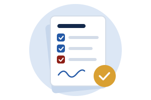

คู่มือผู้นิเทศงานและที่ปรึกษาร่วม
ขั้นตอนรับรอง logbook รายสัปดาห์ แบบประเมินที่ท่านจะได้รับ และสิ่งที่ควรทำเมื่อพบปัญหาระหว่างการฝึก

รับรอง logbook รายสัปดาห์ (ส่งสรุปทุกเช้าวันจันทร์ 08:00 น.)
เปิดอีเมลจากระบบ SE-WIL
ทุกเช้าวันจันทร์ เวลาประมาณ 08:00 น. ระบบจะรวบรวมบันทึกการปฏิบัติงานของสัปดาห์ที่ผ่านมา (วันจันทร์ถึงวันเสาร์/อาทิตย์) แยกตามสัปดาห์ แล้วส่งอีเมลสรุปให้ท่าน
กดลิงก์เฉพาะท่าน
ลิงก์นี้ใช้ได้ตลอดภาคโดยไม่ต้องสมัครสมาชิกหรือเข้าระบบ โปรดอย่าส่งต่อให้ผู้อื่น
ตรวจรายการ
- เวลาตรงกับที่นักศึกษาทำงานจริง (รองรับทั้งวันจันทร์–ศุกร์ และกรณีทำงานวันเสาร์/อาทิตย์)
- แท็กวิชาถูกต้อง: งานตามตำแหน่งเป็น 305 งานโครงงานเป็น 304 (บันทึกได้วิชาละ 1 รายการต่อวัน)
- รายละเอียดบอกได้ว่าทำอะไรและได้ผลอะไร บางรายการมีลิงก์ รูปหลักฐาน ปัญหา และสิ่งที่ได้เรียนรู้ประกอบ
- แถวสีเทาคือวันที่นักศึกษาแจ้งว่าไม่ได้ปฏิบัติงาน (ป่วย ลากิจ บริษัทหยุด) ไม่นับชั่วโมง เลือกไว้ = รับทราบ ถ้าไม่ตรงกับความจริง ให้ยกเลิกการเลือกและระบุเหตุผล
รับรองรายสัปดาห์ หรือรับรองย้อนหลังรวดเดียว
กดปุ่ม "บันทึกผลการรับรอง" ในการ์ดของสัปดาห์นั้น รายการที่ยกเลิกการเลือกจะถูกส่งกลับให้นักศึกษาแก้ไขพร้อมเหตุผล ชั่วโมงนับเฉพาะรายการที่ท่านรับรองแล้ว
กรณีมีค้างรับรองสะสมหลายสัปดาห์: ระบบจะแยกการ์ดออกเป็นรายสัปดาห์เรียงจากสัปดาห์เก่าไปสัปดาห์ใหม่ให้เห็นต่อเนื่องกัน และมีแถบสรุปด้านบนพร้อมปุ่ม "รับรองทั้งหมดที่ค้างอยู่รวดเดียว" ให้ท่านกดอนุมัติทุกสัปดาห์ที่ค้างได้ในคลิกเดียว (หรือจะเลือกรับรอง/ส่งกลับแยกทีละสัปดาห์ในการ์ดด้านล่างก็ได้ตามสะดวก)
ช่วงวันหยุดปีใหม่ ถ้าบริษัทหยุด ท่านรับรองรายการเมื่อกลับมาทำงานได้ นักศึกษาจะบันทึกวันที่บริษัทหยุดเป็นรายการ "ไม่ได้ปฏิบัติงาน" ให้ท่านรับทราบ
ข้อมูลติดต่อ เอกสารข้อตกลง และ CV ของนักศึกษา
ติดต่อหลักสูตรได้ที่ผู้ประสานงาน SE-WIL เป็นอันดับแรก (ดูกล่อง "ติดต่อหลักสูตร") หรือตอบกลับอีเมลจากระบบ ซึ่งส่งถึงผู้ประสานงานโดยตรง
หน้าลิงก์เฉพาะท่านมีการ์ด "ติดต่อหลักสูตร" ที่แสดงผู้ประสานงาน SE-WIL และหัวหน้าหลักสูตร (กรณีจำเป็น) แสดงรูปถ่ายหน้าตรงและข้อมูลติดต่อของนักศึกษากับอาจารย์นิเทศเฉพาะรายที่ท่านดูแล พร้อมกล่อง "เอกสารการฝึกของนักศึกษา" ให้ท่านเปิดอ่านได้ตลอดเวลา ได้แก่ (1) ไฟล์ข้อตกลง PDF SE-WIL01 (3 หน้า) ไฟล์ SE-WIL01 ฉบับลงนามครบ 3 ฝ่ายที่นักศึกษาอัปโหลด และปุ่มดาวน์โหลดไฟล์ปฏิทินกำหนดการ (.ics), (2) หนังสือแนะนำและแบบตอบรับ SE-WIL00 ที่นักศึกษาแนบ, (3) ประวัติย่อนักศึกษา (CV ฉบับล่าสุด) และ (4) รูปถ่ายหน้าตรงนักศึกษา ข้อมูลเหล่านี้ใช้เพื่อการฝึกเท่านั้น โปรดอย่าส่งต่อ
เบอร์โทรของท่านไม่บังคับ ถ้าต้องการให้ติดต่อทางอีเมลอย่างเดียว หรือต้องการแก้หรือลบเบอร์ ตอบกลับอีเมลจากระบบได้ อ่านการคุ้มครองข้อมูลส่วนบุคคล
การยืนยันแผนงาน 15 สัปดาห์ (SE-WIL03) ข้อเสนอโครงงาน (SE-WIL05) และการนิเทศ (SE-WIL06)
บนหน้าลิงก์เฉพาะท่าน ใต้การ์ดของนักศึกษาแต่ละคนจะมีกล่องเปิดดูและกดรับรองข้อมูลระหว่างภาคได้โดยตรงโดยไม่ต้องสมัครบัญชี ดังนี้
- แผนการปฏิบัติงาน 15 สัปดาห์ (SE-WIL03 · สัปดาห์ที่ 2): เมื่อนักศึกษาส่งแผนงาน ระบบจะส่งอีเมลแจ้งท่าน ท่านสามารถเปิดดูแผนงานทั้ง 4 ช่วงสัปดาห์ ใส่ความเห็น และกดปุ่ม "ยืนยันแผนงาน 15 สัปดาห์" (หรือส่งกลับให้แก้ไข)
- ข้อเสนอโครงงานปัญหาพิเศษ (SE-WIL05 · สัปดาห์ที่ 3): ที่ปรึกษาร่วม (หรือผู้นิเทศงานกรณีเป็นคนเดียวกัน) ตรวจทานหัวข้อ ขอบเขต และสิ่งส่งมอบ แล้วกดปุ่ม "รับรองโจทย์และขอบเขตโครงงาน" เพื่อให้อาจารย์ที่ปรึกษาพิจารณาอนุมัติและให้คะแนนต่อไป
- การนิเทศงานและประชุมสามฝ่าย (SE-WIL06 · สัปดาห์ที่ 5–7): เมื่ออาจารย์นิเทศกำหนดวันนัดหมายนิเทศหรือบันทึกสรุปผลการประชุมสามฝ่าย ระบบจะส่งอีเมลแจ้งท่าน ท่านสามารถเปิดดูสรุปผลทั้งส่วน ก (ENGSE305) และส่วน ข (ENGSE304) ใส่ข้อเสนอแนะเพิ่มเติม และกดปุ่ม "ยืนยันรับทราบผลการนิเทศและข้อตกลงร่วมกัน" ได้ทันที
แบบประเมินสมรรถนะ (SE-WIL08)
ท่านจะได้รับลิงก์แบบประเมินสองครั้ง ครั้งแรกในสัปดาห์ที่ 8 เป็นการประเมินเชิงพัฒนา (10%) เพื่อให้นักศึกษารู้ว่าควรปรับอะไร ครั้งที่สองในสัปดาห์ที่ 14 (30%) แบบประเมินวัดสมรรถนะการทำงานในตำแหน่ง ความรับผิดชอบ และการทำงานร่วมกับผู้อื่น และไม่มีข้อเกี่ยวกับคุณภาพโครงงาน เพราะส่วนนั้นประเมินใน ENGSE304
| แบบประเมิน | ผู้ประเมิน | สัปดาห์ | น้ำหนัก |
|---|---|---|---|
| SE-WIL08 สมรรถนะกลางภาค | ผู้นิเทศงาน | 8 | 10% ของ ENGSE305 |
| SE-WIL08 สมรรถนะปลายภาค | ผู้นิเทศงาน | 14 | 30% ของ ENGSE305 |
| SE-WIL09 คุณค่าผลงาน | ที่ปรึกษาร่วม | 14 | 20% ของ ENGSE304 |
| SE-WIL11 อนุญาตเผยแพร่ | ที่ปรึกษาร่วม | 13–15 | เงื่อนไขก่อนสอบ |
ถ้าแบบประเมินส่งไม่ทันกำหนด นักศึกษาจะได้ระดับคะแนน I ไว้ก่อน จนกว่าหลักสูตรจะได้รับแบบประเมินของท่าน
สำหรับที่ปรึกษาร่วม
- สัปดาห์ที่ 0–3 เสนอโจทย์ 1–2 หัวข้อ ร่างข้อความปัญหากับนักศึกษา และกด "รับรองโจทย์และขอบเขตโครงงาน" ในข้อเสนอโครงงาน (SE-WIL05) ผ่านลิงก์เฉพาะท่าน
- สัปดาห์ที่ 5–7 ร่วมประชุมสามฝ่ายในวันนิเทศงาน และกดรับทราบสรุปผลการนิเทศ (SE-WIL06)
- สัปดาห์ที่ 13–15 ตรวจเนื้อหาลับในร่างรายงาน และลงนามอนุญาตเผยแพร่
- สัปดาห์ที่ 14 ดูการสาธิตและประเมินว่าผลงานมีคุณค่าต่อสถานประกอบการเพียงใด รวมถึงระดับการนำไปใช้จริง
- สัปดาห์ที่ 15 ร่วมเป็นกรรมการสอบปากเปล่า ออนไลน์ได้
เมื่อเกิดปัญหา
- นักศึกษาขาดงานหรือมีปัญหาพฤติกรรม แจ้งผู้ประสานงาน SE-WIL หรืออาจารย์นิเทศได้ทันที ไม่ต้องรอวันนิเทศ
- นักศึกษาขอลา การลาต้องได้รับอนุมัติจากทั้งท่านและอาจารย์ วันลาไม่นับเป็นชั่วโมงฝึก
- ต้องการยุติการฝึก หลักสูตรใช้คำร้อง SE-WIL02 และสอบข้อเท็จจริงร่วมกับท่านก่อนตัดสิน
- บริษัทไม่สามารถรับนักศึกษาต่อได้ ชั่วโมงที่ท่านรับรองแล้วนับต่อได้ที่สถานประกอบการแห่งใหม่
- ต้องการเปลี่ยนผู้นิเทศงาน แจ้งผู้ประสานงาน SE-WIL เพื่อออกลิงก์ให้ผู้นิเทศงานคนใหม่